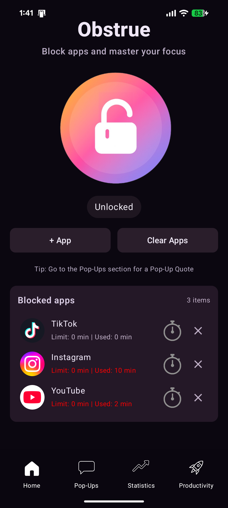
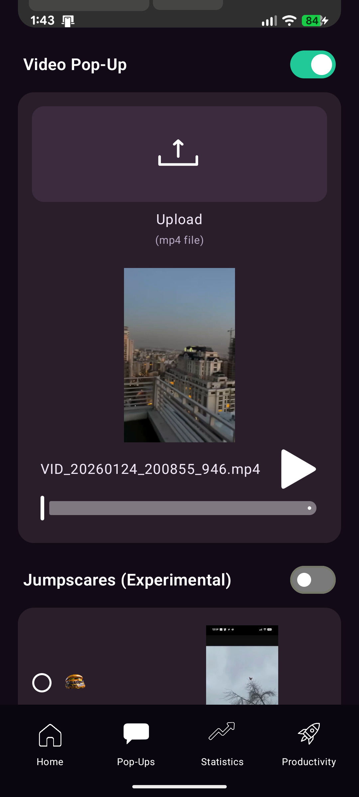
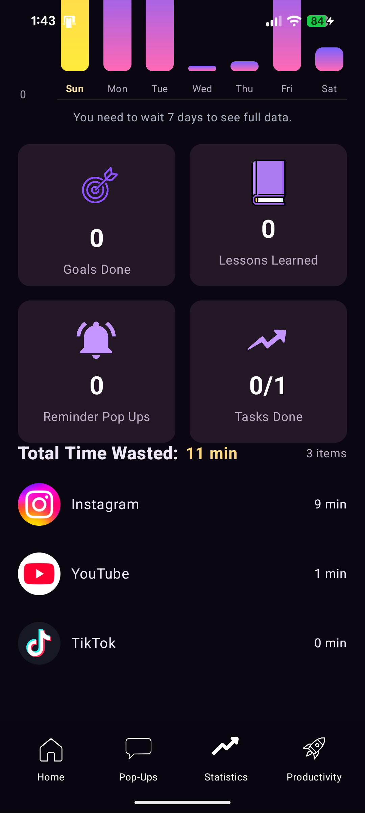
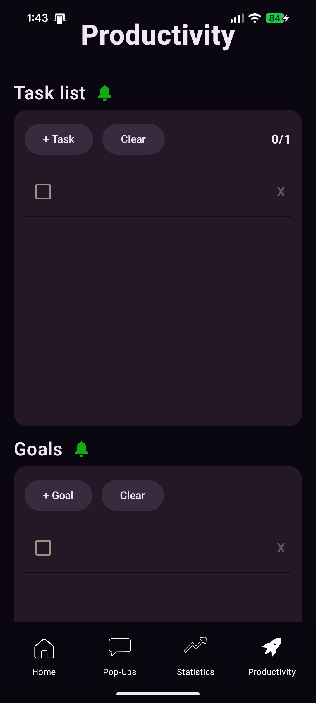

I'm all in for productivity and using your time wisely. Anytime I got an app blocker I always noticed that I was never able to customize what pops up when I go over my app limit. Now this seems like a minor thing but to me it's a pretty big thing because when the pop-ups are personalized. They are targeted towards the specific user, in this case me.
I got the idea of making an app that pops up a custom pop-up that you customize when you go over your app limit when I created a printed sheet of paper that had personalized things, such as my goals and what I could be doing with my time instead. I taped it to my table and id look at my it when I do things like play games or go on social media apps and I would usually stop wasting time and go back to working on my goals.
After a while I decided to put it on my computer directly so I made a mini Python script that pops up the same custom message that was on my printed paper about what I could be doing instead and had it pop up when I would waste time on something such as a game or a social media app. This was pretty effective for me until I realized that I also spend a lot of time on social media and waste time on my phone. That's when I decided to make an app for my phone because if it worked on my computer surely it would work on my phone.
I started building an app to do just that. I came up with the name "Obstrue" Because it means to block or lock in Latin, which I thought was pretty cool. My app so far works incredibly well for me because it's very simple, it's free, and it's very versatile with the way you can customize what pops up. I've utilize my time so well because of my app and hopefully when I start advertising even more, lots of people can feel the same way.
Custom text, images, and audio triggers to disrupt mindless app usage effectively.
Comprehensive tracking of screen time wasted per day/week/month with insightful data visualization.
Built-in to-do lists, daily goals, and lessons learned tracker to keep you on path.
Prompt utilized for architectural decisions and code optimization.
Restated Obstrue description and four main screens (home, popup, statistics, productivity); prepared to give testers links.
Fixed “how can I do better tomorrow” behavior.
KHALAS! (milestone); started making videos; ensured proper ads present.
Double-checked statistics accuracy and mapping from app time to screen time; enlarged goals icon; planned targeted banner ads per section; extracted test-ad build and prepared real ad integration.
Added a “how can I do better tomorrow” section to the productivity tab; fixed bug where app time was not being tracked correctly.
Added a “lessons learned” section to the productivity tab; fixed bug where app time was not being tracked correctly.
Added a “daily goals” section to the productivity tab; fixed bug where app time was not being tracked correctly.
Added a “to-do list” section to the productivity tab; fixed bug where app time was not being tracked correctly.
Added a “productivity” tab to the bottom navigation bar; fixed bug where app time was not being tracked correctly.
Added a “statistics” tab to the bottom navigation bar; fixed bug where app time was not being tracked correctly.
Added a “home” tab to the bottom navigation bar; fixed bug where app time was not being tracked correctly.
Added a bottom navigation bar; fixed bug where app time was not being tracked correctly.
Added a custom pop-up feature; fixed bug where app time was not being tracked correctly.
Added app tracking feature; fixed bug where app time was not being tracked correctly.
Initial commit; set up basic Android project with Kotlin.
Full history migration complete. Reviewing October - December milestones.